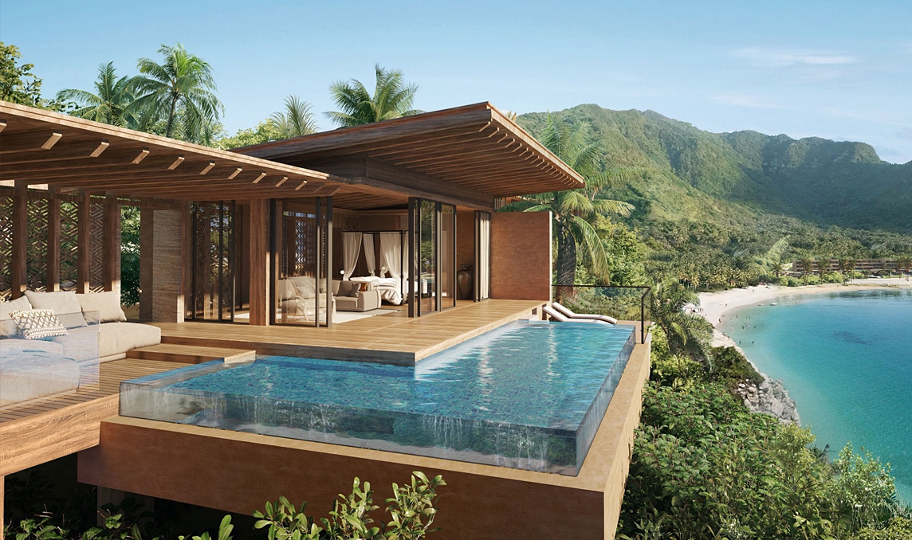
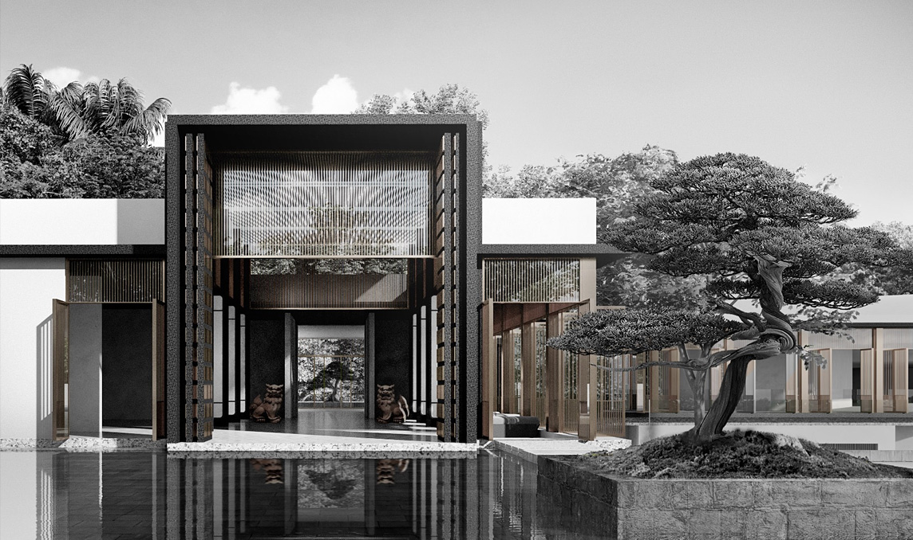
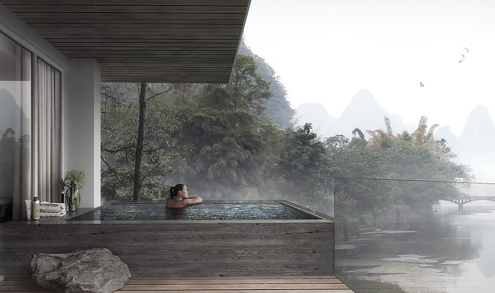
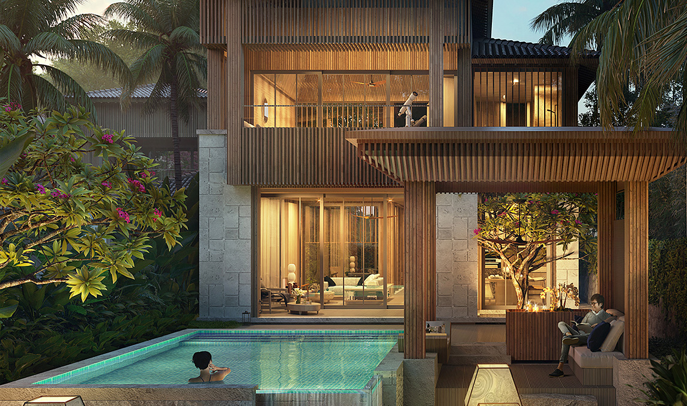
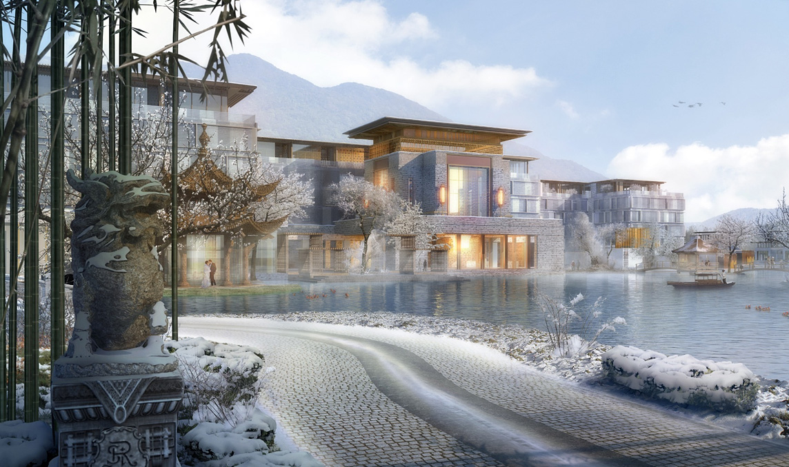

BANYAN TREE HAEUNDAE BUSAN
GLOBAL
반얀트리 해운대 부산, 국내 최고의 휴양지로 당신을 초대합니다
LUXURIOUS BRAND

A PIONEER
IN MAKING NATURE
LUXURIOUS 반얀트리, 최고의 상징이 되기까지
IN MAKING NATURE
LUXURIOUS 반얀트리, 최고의 상징이 되기까지
수천 년 동안 반얀 나무는 지친 여행자들을 위한 신성한 쉼터였습니다.
그리고 그것은 1994년 설립된 반얀트리의 영감이자 철학이 되었습니다.
푸켓의 황무지를 아시아 최초의 통합 리조트이자 세계적 휴양지로
변화시킨 반얀트리의 열정은 반얀트리 푸켓을 시작으로 오늘까지
몸과 마음, 정신 회복 공간으로서 세계 최정상을 지키고 있습니다.
WHY, BANYAN TREE
반얀트리가 선보이는 완벽한 안식처,
반얀트리 해운대 부산과 함께 세계 곳곳 이름 난 비경 속의 반얀트리를 만나십시오.
22
22개 국가
48
48개의 호텔과 리조트
64
64개의 스파,골프코스 및 레지던스
2700+
2700여 개 이상의 수상 경력
BANYAN TREE HAEUNDAE BUSAN
DESIGN CONCEPT
FACADE DESIGN
파사드 디자인
scsy
싱가포르에 본사를 두고 있으며, 아시아 다수 국가에 지사 운영을 하고 있는 글로벌 파사드 디자인 업체입니다.
럭셔리 리조트나 호텔 위주의 경험이
풍부한 업체로
다양한
건축 분야에서 활약하고 있습니다.
한국의 전통 패턴과 미학에 영감을 받아 현대적으로 재해석했으며 반얀트리 해운대 건축물의 웅장함을 명확히 표현하고 자연환경과 바다 전망의 활용을 극대화하였습니다.
SCSY Link

BANYAN TREE RESORT, LOMBOK

BANYAN TREE RESORT, OKINAWA

MARRIOTT AUTOGRAPH COLLECTION, TANGSHUO, GUILIN, CHINA

FOUR SEASONS RESORT AND RESIDENCES, OKINAWA, JAPAN

ST REGIS HANGZHOU, CHINA